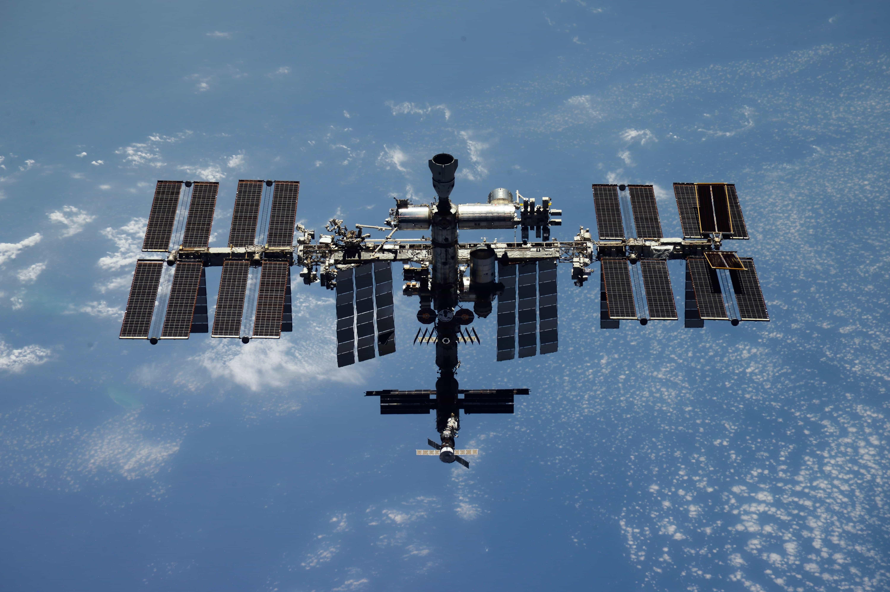

Идея создать космическую станцию, где будут работать люди из разных стран, родилась ещё в начале 1990-х. В марте 1993 года генеральный директор Российского космического агентства Юрий Коптев и генеральный конструктор НПО «Энергия» Юрий Семёнов предложили руководителю НАСА Дэниелу Голдину объединить усилия. В июне того же года инициативу с перевесом всего в один голос одобрила палата представителей конгресса США.
20 ноября 1998 года ракета-носитель «Протон-К» вывела на орбиту модуль «Заря» — первый элемент будущей Международной космической станции. Его построили в России по заказу НАСА, и именно «Заря» стала тем самым «первым кирпичиком», который соединил российский и американский сегменты в единый космический дом.

26 июля 2000 года к «Заре» пристыковался служебный модуль «Звезда», созданный на базе советского проекта станции «Мир-2». С этого момента у станции появились системы жизнеобеспечения и жилые отсеки. А в ноябре 2000 года на МКС прибыл первый постоянный экипаж — российские космонавты Сергей Крикалёв и Юрий Гидзенко вместе с американским астронавтом Уильямом Шепердом. Им предстояло «обживать замечательный орбитальный дом, созданный трудом специалистов из разных стран», как говорилось в поздравительной телеграмме президента России.
Строительство российского сегмента продолжалось больше двадцати лет. В 2009 году добавился малый исследовательский модуль «Поиск», в 2010-м — стыковочно-грузовой «Рассвет». А 21 июля 2021 года, после 14 лет задержек и доработок, к станции отправился многоцелевой лабораторный модуль «Наука». Через четыре месяца к нему пристыковался узловой модуль «Причал».
Российские корабли «Союз» на долгие годы стали единственным средством доставки экипажей на МКС. Когда после катастрофы шаттла «Колумбия» американские корабли перестали летать, именно «Союзы» обеспечивали постоянное присутствие людей на станции.
Сергей Крикалёв, работавший на МКС в первой экспедиции, так объяснял, почему важно сохранять это сотрудничество:
«В космосе не надо хлопать дверью и показывать характер. Зачем ломать то, что хорошо работает? Космонавтика — проект долгий, переживет текущие события. Это образец того, как мы можем ставить перед собой амбициозные научные и технические задачи и решать их вместе, а не искать поводы для разрыва».